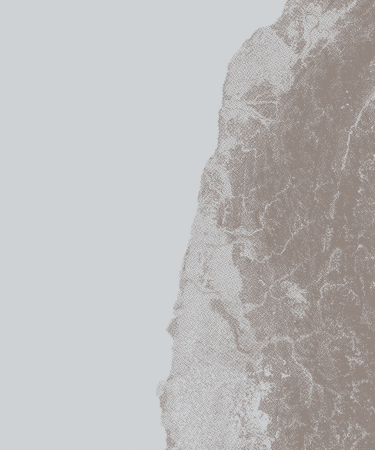

市場
THE WARMTH
DEDICATED TO
THE EARLY
HOURS OF DAWN
在這個繁忙的城市，市場承載著生活的起伏，
而在清晨的時光裡，它展現出一種凌晨限定的溫暖。
夜未完全褪去，市場早已喚醒。
橙色的陽光透過市場的招牌，
輕輕灑在擺滿各色食材的攤位上。
清新的空氣中彌漫著新鮮蔬果的香氣，
彷彿是一場大自然的綻放。
攤販們早早來到這片熟悉的場所，
他們的笑容在晨光中顯得格外燦爛。
老闆娘熱情地和顧客攀談
彼此間的交流讓整個市場充滿了溫馨和親切。
In this bustling city, the market carries the ebb and flow of life, revealing a kind of dawn-limited warmth in the early morning.
Before the night completely fades away, the market is already awake. The orange sunlight gently sprinkles through the market's signs, casting a soft glow on stalls filled with various ingredients. The fresh air is filled with the aroma of crisp fruits and vegetables, resembling a blossoming scene from nature.
Vendors arrive early at this familiar place, their smiles shining brightly in the morning light. The market's proprietress engages warmly with customers, creating an atmosphere full of warmth and friendliness.